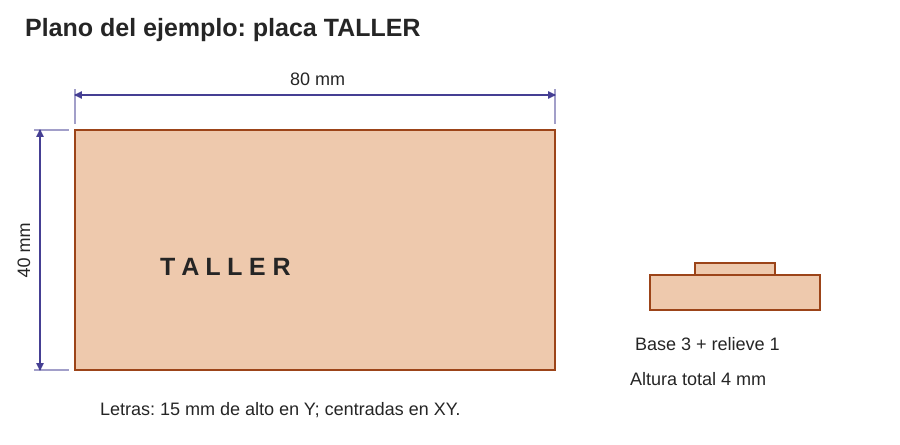

Contenido
Para qué sirve una ficha técnica
Una ficha técnica cuenta cómo es vuestra pieza y cómo se hizo, para que otra persona pueda fabricarla, usarla o mejorarla sin preguntaros nada. La empezasteis al elegir la pieza; ahora la completáis.
1. Los siete apartados
| Apartado | Qué va |
|---|---|
| 1. Identificación | Qué es la pieza, qué problema resuelve, para quién, a cuántas personas afecta (con un dato) y dónde va. |
| 2. Plano acotado | Vistas de la pieza con todas las medidas necesarias para fabricarla. |
| 3. Materiales | Qué materiales, cuánto, cuánto cuestan y por qué los elegisteis. |
| 4. Fabricación | Cómo se hizo: ajustes de impresión o pasos de taller, y la prueba con su resultado. |
| 5. Ciclo de vida | Sus cinco fases con datos de vuestra pieza: materias primas, fabricación, distribución, uso y mantenimiento, y fin de vida. |
| 6. Uso y mantenimiento | Cómo se instala, para qué sirve y para qué no, y cómo se repara. |
| 7. Licencia | Qué se puede hacer con vuestro diseño y qué aporta compartirlo con una comunidad. |
2. Un plano que sirva para fabricar

- Elegid solo las vistas que hacen falta: superior para la forma y los agujeros, lateral para los espesores.
- En Tinkercad, mirad la pieza desde arriba o de lado con el cubo de vistas y la Regla puesta, y haced una captura.
- Poned todas las cotas: medidas generales, diámetros, distancias de los agujeros a los bordes, espesores y holguras.
- Distinguid la medida del diseño de la medida real que tomasteis con el calibre.
Piensa. Una foto de la pieza con una regla al lado, ¿sirve como plano?
Ver respuesta
No del todo: no se ven los diámetros, los espesores ni las medidas escondidas. Un plano necesita vistas y cotas.
3. Ejemplo: la placa TALLER
| Apartado | Ejemplo resumido |
|---|---|
| 1. Identificación | Placa para la puerta del taller. El cartel que había era pequeño y no se leía bien. Hecha a mano en cartón. |
| 3. Materiales | Cartón de 80 × 40 × 3 aprovechado de un retal y cartulina de 1 mm para las letras. |
| 4. Fabricación y prueba | Marcar, cortar con cúter (con permiso) sobre base de corte y pegar las letras. Prueba: tres personas leen el cartel desde la puerta; dos lo leen bien y una duda. Cambio: más contraste en las letras. |
| 5. Ciclo de vida | Material reaprovechado; los recortes sirven para otras letras. Al final se recuperan las partes útiles y el resto se separa para reciclar. |
| 7. Licencia | «Placa TALLER», del estudio del taller, bajo licencia CC BY-SA 4.0. |
4. Elegid una licencia
Si compartís vuestro diseño, una licencia Creative Commons dice qué pueden hacer otros con él. Se combinan estas condiciones:
| Sigla | Significa |
|---|---|
| BY | Hay que decir quién lo hizo. |
| SA | Si alguien lo cambia y lo comparte, tiene que usar la misma licencia. |
| NC | No se puede usar para ganar dinero. |
| ND | Se puede compartir, pero no compartir versiones cambiadas. |
5. Compartir con una comunidad
Miles de personas comparten sus diseños con licencias abiertas. Gracias a eso nadie tiene que empezar de cero, y muchas personas pueden probar y mejorar un mismo diseño.
- Qué aporta: partir del trabajo de otros, recibir mejoras y que vuestro diseño sirva a más gente.
- Qué exige: documentar bien (para eso está la ficha), respetar las licencias, decir de quién es lo que reutilizáis y compartir vuestras mejoras.
Ejemplos: en Printables se comparten miles de piezas para imprimir, con sus licencias. e-NABLE es una comunidad de voluntarios que diseña e imprime manos protésicas y las regala a quien las necesita.
Piensa. ¿En qué se parece vuestra pieza a un proyecto como e-NABLE?
Ver respuesta
En los dos casos se fabrica algo para resolver la necesidad de otras personas (aquí, la del centro) y se comparte cómo se ha hecho para que otros lo puedan repetir o mejorar. Eso es un servicio a la comunidad.
6. Entregad la ficha
Revisadla entre todos: ¿podría alguien fabricar la pieza solo con la ficha? Después, Archivo → Descargar → Documento PDF, con el nombre ficha_tecnica.pdf. Una persona la sube a la tarea de Moodle Ficha técnica abierta.
7. Presentad vuestra pieza
Cada equipo la presenta en dos minutos, enseñando la pieza o su foto. Contad cuatro cosas y repartíos la palabra:
- Qué es la pieza, para quién y dónde va.
- Una decisión de material o de diseño, con su porqué.
- Cómo la probasteis y qué pasó.
- Qué licencia elegisteis y qué permite.
Usad las palabras de la unidad (cota, holgura, capa, voladizo, plantilla, licencia) y un lenguaje que incluya a todo el mundo: por ejemplo, «las personas que usan el taller» en lugar de «los chicos». Si algo no se ha probado, decidlo.
Compruébalo
Une cada sigla de las licencias Creative Commons con lo que significa.
Une cada sigla de las licencias Creative Commons con lo que significa.
", "showMinimize": false, "itinerary": {"showClue": false, "clueGame": "", "percentageClue": 40, "showCodeAccess": false, "codeAccess": "", "messageCodeAccess": ""}, "cardsGame": [{"url": "", "x": 0, "y": 0, "author": "", "alt": "", "audio": "", "color": "#000000", "backcolor": "#ffffff", "eText": "BY", "urlBk": "", "xBk": 0, "yBk": 0, "authorBk": "", "altBk": "", "audioBk": "", "colorBk": "#000000", "backcolorBk": "#ffffff", "eTextBk": "Hay%20que%20decir%20qui%C3%A9n%20lo%20hizo"}, {"url": "", "x": 0, "y": 0, "author": "", "alt": "", "audio": "", "color": "#000000", "backcolor": "#ffffff", "eText": "SA", "urlBk": "", "xBk": 0, "yBk": 0, "authorBk": "", "altBk": "", "audioBk": "", "colorBk": "#000000", "backcolorBk": "#ffffff", "eTextBk": "Las%20versiones%20cambiadas%20se%20comparten%20con%20la%20misma%20licencia"}, {"url": "", "x": 0, "y": 0, "author": "", "alt": "", "audio": "", "color": "#000000", "backcolor": "#ffffff", "eText": "NC", "urlBk": "", "xBk": 0, "yBk": 0, "authorBk": "", "altBk": "", "audioBk": "", "colorBk": "#000000", "backcolorBk": "#ffffff", "eTextBk": "No%20se%20puede%20usar%20para%20ganar%20dinero"}, {"url": "", "x": 0, "y": 0, "author": "", "alt": "", "audio": "", "color": "#000000", "backcolor": "#ffffff", "eText": "ND", "urlBk": "", "xBk": 0, "yBk": 0, "authorBk": "", "altBk": "", "audioBk": "", "colorBk": "#000000", "backcolorBk": "#ffffff", "eTextBk": "No%20se%20pueden%20compartir%20versiones%20cambiadas"}], "isScorm": 0, "textButtonScorm": "Guardar la puntuación", "repeatActivity": true, "weighted": 100, "textAfter": "", "version": 2, "percentajeCards": 100, "type": 2, "showSolution": true, "timeShowSolution": 3, "time": 3, "evaluation": false, "evaluationID": "f96bc37c-5aaf-40e4-af65-a544218a46a6", "id": "idevice-1791888978282-pg5xkbcp2", "msgs": {"msgSubmit": "Enviar", "msgClue": "¡Genial! La pista es:", "msgCodeAccess": "Código de acceso", "msgPlayStart": "Pulsa aquí para jugar", "msgScore": "Puntuación", "msgErrors": "Errores", "msgHits": "Aciertos", "msgMinimize": "Minimizar", "msgMaximize": "Maximizar", "msgFullScreen": "Pantalla Completa", "msgExitFullScreen": "Salir del modo pantalla completa", "msgNoImage": "Pregunta sin imágenes", "msgEndGameScore": "Comience la partida antes de guardar la puntuación.", "msgScoreScorm": "La puntuación no se puede guardar porque esta página no forma parte de un paquete SCORM.", "msgOnlySaveScore": "¡Solo puede guardar la puntuación una vez!", "msgOnlySave": "Solo puede guardar una vez", "msgInformation": "Información", "msgYouScore": "Su puntuación", "msgAuthor": "Autoría", "msgOnlySaveAuto": "Su puntuación se guardará después de cada pregunta. Solo puede jugar una vez.", "msgSaveAuto": "Su puntuación se guardará automáticamente después de cada pregunta.", "msgSeveralScore": "Puede guardar la puntuación tantas veces como quiera", "msgYouLastScore": "La última puntuación guardada es", "msgActityComply": "Ya ha realizado esta actividad.", "msgPlaySeveralTimes": "Puede realizar esta actividad cuantas veces quiera", "msgClose": "Cerrar", "msgAudio": "Audio", "msgNumQuestions": "Número de tarjetas", "msgTryAgain": "Necesitas al menos %s% de respuestas correctas para obtener la información. Inténtalo de nuevo.", "msgEndGameM": "Has completado el juego. Tu puntuación es %s.", "msgUncompletedActivity": "Actividad no completada", "msgSuccessfulActivity": "Actividad superada. Puntuación: %s", "msgUnsuccessfulActivity": "Actividad no superada. Puntuación: %s", "msgTypeGame": "Relaciona", "msgCheck": "Comprobar", "msgRestart": "Reiniciar"}}